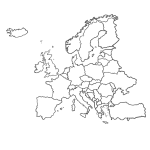
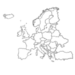

¿Te gusta viajar?
Soy Júlia, vivo viajando por el mundo desde hace más de 10 años y animo a más mujeres que, como yo, quieren ser más libres, fuertes e independientes. ¿Quieres unirte tu también a esta aventura?
Soy Júlia, vivo viajando por el mundo desde hace más de 10 años y animo a más mujeres que, como yo, quieren ser más libres, fuertes e independientes. ¿Quieres unirte tu también a esta aventura?
 

Europa

Ásia


America


Oceanía